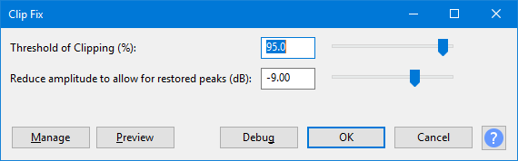

Clip Fix
Clip Fix... attempts to reconstruct clipped regions by interpolating the lost signal. It is only likely to be effective for repairing lightly clipped audio.
- Accessed by:
- 
{kind=link}
Threshold of Clipping (%)
How close to the maximum sample magnitude any sample must be to be considered clipped.
- If processing is slow, select only a few seconds of clipped audio at a time.
- This effect assumes that the audio is clipped at the same dB level for both positive and negative peaks. If either the top or bottom of the waveform is successfully reconstructed but not both, try applying DC offset correction before applying Clip Fix.
Reduce amplitude to allow for restored peaks (dB)
This enables you to reduce the amplification of the current selection (default is -9 dB) to provide headroom for the clip-fixed reconstruction.
Buttons
Clicking on the command buttons give the following results:
- gives a dropdown menu enabling you to manage presets for the tool and to see some detail about the tool. For details see Manage presets.
- plays a short preview of what the audio would sound like if the effect is applied with the current settings, without making actual changes to the audio. The length of preview is determined by your setting in , the default setting is 6 seconds.
- applies the effect to the selected audio with the current effect settings, but unlike the effect runs in debug mode. This is primarily of use when writing or editing Nyquist plug-ins.
- In addition to the normal plug-in behavior, a "debug window" opens to display error messages, normally the debug window will be empty..
- applies the effect to the selected audio with the current effect settings.
- aborts the effect and leaves the audio unchanged.
 brings you to the appropriate page in the Manual, this page.
brings you to the appropriate page in the Manual, this page.